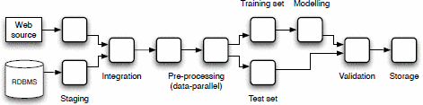

CWL / Snakemake / Nextflow
ResearchIT, University of Manchester
2025-01-14
Everything on this presentation is based on available documentation, and my (very) limited experience:

https://github.com/meirwah/awesome-workflow-engines/
nf_core (community)cwltool, Toil, Arvados, UNIX)How dependencies are tracked and execution is controlled.
cwltool)Whether tools run in isolated directories, and interrupted workflows can be resumed.
-F)-resume)--cachedir (patchy in cwltool)A bash script that “processes” some CSV data:
process.nf
// run with: nextflow run nextflow/process.nf
params.data = "$launchDir/data/monkeys.csv"
params.results = "$launchDir/results"
process process_data {
publishDir params.results
input:
path data
output:
path "${data.baseName}.txt"
path "${data.baseName}.log"
script:
// requires dummy.sh to be in $projectDir/bin
"""
dummy.sh ${data} ${data.baseName}.txt > ${data.baseName}.log
"""
}
workflow {
process_data(params.data)
}tool.cwl
cwlVersion: v1.2
class: CommandLineTool
label: dummy.sh tool wrapper
doc: |
Example tool wrapper, for dummy.sh script
(copies a <data>.csv file to <data>.txt
and echoes a message to <data>.log)
requirements:
InlineJavascriptRequirement: {}
InitialWorkDirRequirement:
listing:
- entryname: dummy.sh
entry: { $include: ../dummy.sh }
baseCommand: [bash, dummy.sh]
arguments:
- valueFrom: "out.txt"
position: 2
inputs:
data:
label: CSV file to process
type: File
inputBinding: {position: 1}
stdout: $(inputs.data.nameroot + ".log")
outputs:
results_file:
type: File
outputBinding:
glob: "out.txt"
outputEval: ${self[0].basename = inputs.data.nameroot + ".txt"; return self;}
log_file:
type: stdoutprocess.cwl
#!/usr/bin/env cwl-runner
cwlVersion: v1.2
class: Workflow
doc: |
Example workflow, that calls dummy.sh script
(copies a *.csv file changing extension, and
echoes a description to stdout)
requirements:
MultipleInputFeatureRequirement: {}
inputs:
data_file: File
results_folder:
type: string
default: "results"
outputs:
results_dir:
type: Directory
outputSource: move_to_folder/dir
steps:
process_data:
run: tool.cwl
in:
data: data_file
out: [results_file, log_file]
move_to_folder:
run: create_dir_from_filelist.cwl
in:
folder: results_folder
files:
- process_data/results_file
- process_data/log_file
out: [dir]Snakemake container)NextflowWaits for everyone to conform.
config, log, etc. are global)SubworkflowFeatureRequirementWhat can be considered an execution step?
Bash, Python, R
Linux scripts: Bash, Perl, Ruby, Python, etc.; Groovy
Bash, JavaScript, other scripts can be “inlined”
env, executor, conda)log placeholder (does nothing on its own)--summary (limited)stdout output typestdout as output- Too flexible? (lacks structure or best practices), poorly documented (outside existing Omics workflows)
- Steep learning curve (Groovy)
- Annoyingly verbose, and rigid. Support for runners is patchy.
Jeremy Leipzig, A review of bioinformatic pipeline frameworks, Briefings in Bioinformatics, Volume 18, Issue 3, May 2017, Pages 530–536, https://doi.org/10.1093/bib/bbw020
V. Curcin and M. Ghanem, “Scientific workflow systems - can one size fit all?,” 2008 Cairo International Biomedical Engineering Conference, Cairo, Egypt, 2008, pp. 1-9, https://doi.org/10.1109/CIBEC.2008.4786077
{kind=link}